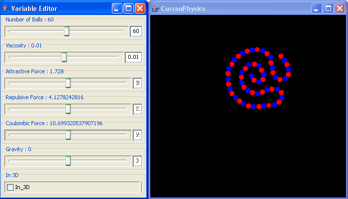
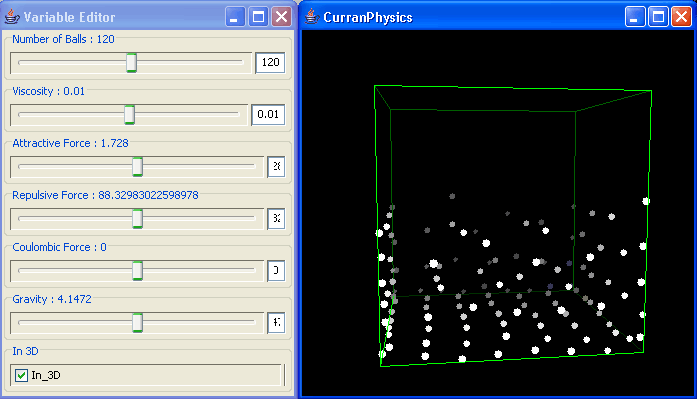

CurranPhysics
By Curran Kelleher
A rough simulation of particles interacting with various forces.
Download CurranPhysics as an executable .jar (Java Archive) file. If you have Java Runtime (www.java.com) installed on your computer, this file can typically be executed directly by double clicking it.
An older version (actually with more interesting behavior), featured on the NECSI web site


12/9/06